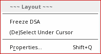
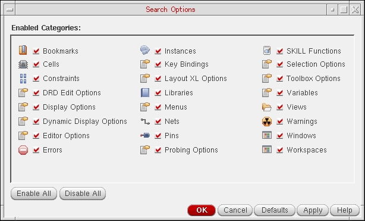

B
Layout Viewer Assistants
This topic describes the following assistants available in the Virtuoso® Layout Viewer tool:
Dynamic Selection
Use the Dynamic Selection assistant to identify and select specific objects of interest from a densely-populated design window with many overlapping or hierarchical objects.
The assistant lists all the objects currently under the mouse pointer in the design display area, ordered by the layer-purpose pair on which a particular object is drawn. The display is updated whenever the mouse pointer is moved in the design display area.
You can freeze (and unfreeze) the display by pressing Ctrl+h when the pointer is positioned in the design display area. When the display is frozen, if you select an object in the Dynamic Selection assistant, the object is automatically cross-selected in the layout window. If you move the pointer over an object in the assistant, that object is dynamically highlighted in the layout window.
For hierarchical instances, groups, and ROD objects, the assistant displays the hierarchical path of the objects under the mouse pointer. It does not necessarily list all the objects contained in a particular hierarchical object, only those that were under the pointer when the display was frozen. The depth of the hierarchy shown is governed by the number of display levels set for the layout window in the Display Options Form.
This section covers the following topics:
Dynamic Selection Assistant Display
For each object, the assistant indicates the layer-purpose pair on which the object is drawn and provides a short description of the object itself. Different fonts and background colors are used to display an object depending on its selection state.
The information presented depends on the object type.
Click the [+] icon to reveal the hierarchical objects under a particular node and the [-] icon to hide them again. This happens automatically if the Auto expand option is switched on in the Dynamic Selection Assistant Options Form. For hierarchical objects, LPP, Data, and Hierarchy columns are displayed in the Dynamic Selection assistant.
To ensure that order of fields that you choose for the Dynamic Selection assistant and the show or hide state are retained even after you close the current Virtuoso session, save your preferences in the *.ini file, as shown below:
DSA.ini file which gets loaded automatically when you launch the Dynamic Selection assistant. The DSA.ini file is saved by default in the . / .cadence/dfII/DSA directory, unless referenced at some other location as defined in the setup.loc file.Selecting an Object using the Dynamic Selection Assistant
To use the Dynamic Selection assistant:
- From the layout window menu bar, choose Windows – Assistants – Dynamic Selection.
-
In the layout window, hover your pointer over the design objects you want to examine.
The assistant lists all the objects under the pointer, provides a short description of each object and indicates the layer-purpose pair on which it is drawn.
For more information on how object information is displayed, see Dynamic Selection Assistant Display. -
With pointer in the design display area, right-click to display the Layout context-sensitive menu and choose Freeze DSA or press
Ctrl+hto freeze the display.
 -
In the Dynamic Selection assistant, select the objects you are interested in.
The objects in question are cross-selected in the layout window, allowing you to perform the required operations only on those specific objects. -
From the Layout context-sensitive menu, choose UnFreeze DSA or press
Ctrl+hto unfreeze the display.
The display now updates dynamically when you move your pointer in the layout window.
Palette
For Palette, see Chapter 3, “Palette Assistant”.
Search
You access the Search assistant by selecting Window – Assistants – Search.
The Search assistant provides a wide range of design search facilities, including dynamic context search categories, fast, keyword-directed searching with immediate feedback, and an intuitive user interface that makes searching for design data simple and productive. The Search assistant also provides a fast way to find which form contains which option.
For detailed information about the Search assistant user interface, see
Search Categories
The Search Categories pull-down is used to refine the scope of your search. For example, you can choose to only include Instances in your search query.
From the pull-down, you can also choose to:
- Click Selected at the bottom of the pull-down list to restrict a search query to only those objects that are selected in the current view.
-
Click Options at the bottom of the pull-down list to display the Search Options form. From here, you can select and deselect the categories of object that are to be displayed in the Search Categories pull-down.

Property Editor
You access the Property Editor assistant by selecting Window – Assistants – Property Editor.
The Property Editor assistant enables you to view object property values on the components in your design. By default, each property is displayed in a separate table row in the Property Editor.
Navigator
You access the Navigator assistant by selecting Window – Assistants – Navigator.
The Navigator assistant is a dockable assistant pane that provides facilities to view objects across the design hierarchy using a tree representation.
The Navigator Tree is a hierarchical expandable/collapsible navigation system, used to display devices, nets, and pins that exist in the design area. It helps you navigate through a hierarchical design to find the components you are looking for. Selecting a component in the Navigator selects the corresponding device in the design area. Similarly, selecting a component in the design areas selects the component in Navigator.
If you select a net in the Navigator assistant, the physical shapes on the net are highlighted/probed in the design canvas. The shapes are only highlighted/probed but not selected. When you delete a net selected by using the Navigator assistant, it deletes the associated shapes on the net. The pins on the net are not deleted.
If you select a pin or an instance in the Navigator assistant, the design display area automatically pans to or zooms at the selected object if not currently visible. You can control whether to pan or zoom to the selected object by using the nil.
For detailed information about the Navigator user interface and how to work with the Navigator, see
World View
You can access the World View assistant by selecting Window – Assistants – World View.
The World View assistant is a navigation tool, especially useful in large designs. It shows you a complete picture of your entire design and marks the part of the design that is currently displayed in the drawing area.
For more information, see Using the World View Window.
Return to top